Electronics is a science, and a very accessible science at that. With other areas of scientific study, expensive equipment is generally required to perform any non-trivial experiments. Not so with electronics. Many advanced concepts may be explored using parts and equipment totaling under a few hundred US dollars. This is good, because hands-on experimentation is vital to gaining scientific knowledge about any subject.
When I started writing Lessons In Electric Circuits, my intent was to create a textbook suitable for introductory college use. However, being mostly self-taught in electronics myself, I knew the value of a good textbook to hobbyists and experimenters not enrolled in any formal electronics course. Many people selflessly volunteered their time and expertise in helping me learn electronics when I was younger, and my intent is to honor their service and love by giving back to the world what they gave to me.
In order for someone to teach themselves a science such as electronics, they must engage in hands-on experimentation. Knowledge gleaned from books alone has limited use, especially in scientific endeavors. If my contribution to society is to be complete, I must include a guide to experimentation along with the text(s) on theory, so that the individual learning on their own has a resource to guide their experimental adventures.
A formal laboratory course for college electronics study requires an enormous amount of work to prepare, and usually must be based around specific parts and equipment so that the experiments will be sufficient detailed, with results sufficiently precise to allow for rigorous comparison between experimental and theoretical data. A process of assessment, articulated through a qualified instructor, is also vital to guarantee that a certain level of learning has taken place. Peer review (comparison of experimental results with the work of others) is another important component of college-level laboratory study, and helps to improve the quality of learning. Since I cannot meet these criteria through the medium of a book, it is impractical for me to present a complete laboratory course here. In the interest of keeping this experiment guide reasonably low-cost for people to follow, and practical for deployment over the internet, I am forced to design the experiments at a lower level than what would be expected for a college lab course.
The experiments in this volume begin at a level appropriate for someone with no electronics knowledge, and progress to higher levels. They stress qualitative knowledge over quantitative knowledge, although they could serve as templates for more rigorous coursework. If there is any portion of Lessons In Electric Circuits that will remain "incomplete," it is this one: I fully intend to continue adding experiments ad infinitum so as to provide the experimenter or hobbyist with a wealth of ideas to explore the science of electronics. This volume of the book series is also the easiest to contribute to, for those who would like to help me in providing free information to people learning electronics. It doesn't take a tremendous effort to describe an experiment or two, and I will gladly include it if you email it to me, giving you full credit for the work. Refer to Appendix 2 for details on contributing to this book.
When performing these experiments, feel free to explore by trying different circuit construction and measurement techniques. If something isn't working as the text describes it should, don't give up! It's probably due to a simple problem in construction (loose wire, wrong component value) or test equipment setup. It can be frustrating working through these problems on your own, but the knowledge gained by "troubleshooting" a circuit yourself is at least as important as the knowledge gained by a properly functioning experiment. This is one of the most important reasons why experimentation is so vital to your scientific education: the real problems you will invariably encounter in experimentation challenge you to develop practical problem-solving skills.
In many of these experiments, I offer part numbers for Radio Shack brand components. This is not an endorsement of Radio Shack, but simply a convenient reference to an electronic supply company well-known in North America. Often times, components of better quality and lower price may be obtained through mail-order companies and other, lesser-known supply houses. I strongly recommend that experimenters obtain some of the more expensive components such as transformers (see the AC chapter) by salvaging them from discarded electrical appliances, both for economic and ecological reasons.
All experiments shown in this book are designed with safety in mind. It is nearly impossible to shock or otherwise hurt yourself by battery-powered experiments or other circuits of low voltage. However, hazards do exist building anything with your own two hands. Where there is a greater-than-normal level of danger in an experiment, I take efforts to direct the reader's attention toward it. However, it is unfortunately necessary in this litigious society to disclaim any and all liability for the outcome of any experiment presented here. Neither myself nor any contributors bear responsibility for injuries resulting from the construction or use of any of these projects, from the mis-handling of electricity by the experimenter, or from any other unsafe practices leading to injury. Perform these experiments at your own risk!
In order to build the circuits described in this volume, you will need a small work area, as well as a few tools and critical supplies. This section describes the setup of a home electronics laboratory.
A work area should consist of a large workbench, desk, or table (preferably wooden) for performing circuit assembly, with household electrical power (120 volts AC) readily accessible to power soldering equipment, power supplies, and any test equipment. Inexpensive desks intended for computer use function very well for this purpose. Avoid a metal-surface desk, as the electrical conductivity of a metal surface creates both a shock hazard and the very distinct possibility of unintentional "short circuits" developing from circuit components touching the metal tabletop. Vinyl and plastic bench surfaces are to be avoided for their ability to generate and store large static-electric charges, which may damage sensitive electronic components. Also, these materials melt easily when exposed to hot soldering irons and molten solder droplets.
If you cannot obtain a wooden-surface workbench, you may turn any form of table or desk into one by laying a piece of plywood on top. If you are reasonably skilled with woodworking tools, you may construct your own desk using plywood and 2x4 boards.
The work area should be well-lit and comfortable. I have a small radio set up on my own workbench for listening to music or news as I experiment. My own workbench has a "power strip" receptacle and switch assembly mounted to the underside, into which I plug all 120 volt devices. It is convenient to have a single switch for shutting off all power in case of an accidental short-circuit!
A few tools are required for basic electronics work. Most of these tools are inexpensive and easy to obtain. If you desire to keep the cost as low as possible, you might want to search for them at thrift stores and pawn shops before buying them new. As you can tell from the photographs, some of my own tools are rather old but function well nonetheless.
First and foremost in your tool collection is a multimeter. This is an electrical instrument designed to measure voltage, current, resistance, and often other variables as well. Multimeters are manufactured in both digital and analog form. A digital multimeter is preferred for precision work, but analog meters are also useful for gaining an intuitive understanding of instrument sensitivity and range.
My own digital multimeter is a Fluke model 27, purchased in 1987:
Digital multimeter
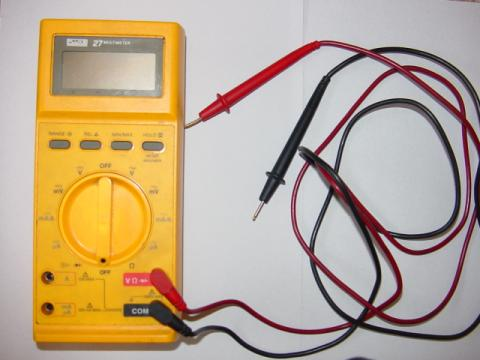
Most analog multimeters sold today are quite inexpensive, and not necessarily precision test instruments. I recommend having both digital and analog meter types in your tool collection, spending as little money as possible on the analog multimeter and investing in a good-quality digital multimeter (I highly recommend the Fluke brand).
======================================
A test instrument I have found indispensable in my home work is a sensitive voltage detector, or sensitive audio detector, described in nearly identical experiments in two chapters of this book volume. It is nothing more than a sensitized set of audio headphones, equipped with an attenuator (volume control) and limiting diodes to limit sound intensity from strong signals. Its purpose is to audibly indicate the presence of low-intensity voltage signals, DC or AC. In the absence of an oscilloscope, this is a most valuable tool, because it allows you to listen to an electronic signal, and thereby determine something of its nature. Few tools engender an intuitive comprehension of frequency and amplitude as this! I cite its use in many of the experiments shown in this volume, so I strongly encourage that you build your own. Second only to a multimeter, it is the most useful piece of test equipment in the collection of the budget electronics experimenter.
Sensitive voltage/audio detector
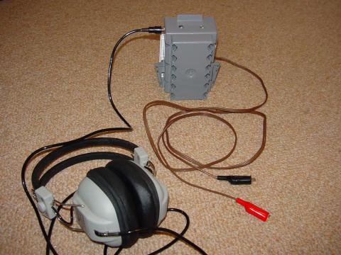
As you can see, I built my detector using scrap parts (household electrical switch/receptacle box for the enclosure, section of brown lamp cord for the test leads). Even some of the internal components were salvaged from scrap (the step-down transformer and headphone jack were taken from an old radio, purchased in non-working condition from a thrift store). The entire thing, including the headphones purchased second-hand, cost no more than $15 to build. Of course, one could take much greater care in choosing construction materials (metal box, shielded test probe cable), but it probably wouldn't improve its performance significantly.
The single most influential component with regard to detector sensitivity is the headphone assembly: generally speaking, the greater the "dB" rating of the headphones, the better they will function for this purpose. Since the headphones need not be modified for use in the detector circuit, and they can be unplugged from it, you might justify the purchase of more expensive, high-quality headphones by using them as part of a home entertainment (audio/video) system.
======================================
Also essential is a solderless breadboard, sometimes called a prototyping board, or proto-board. This device allows you to quickly join electronic components to one another without having to solder component terminals and wires together.
Solderless breadboard
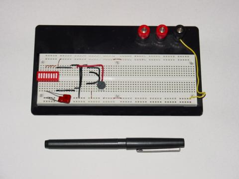
======================================
When working with wire, you need a tool to "strip" the plastic insulation off the ends so that bare copper metal is exposed. This tool is called a wire stripper, and it is a special form of plier with several knife-edged holes in the jaw area sized just right for cutting through the plastic insulation and not the copper, for a multitude of wire sizes, or gauges. Shown here are two different sizes of wire stripping pliers:
Wire stripping pliers
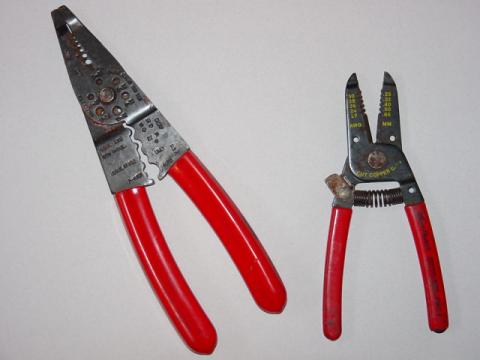
======================================
In order to make quick, temporary connections between some electronic components, you need jumper wires with small "alligator-jaw" clips at each end. These may be purchased complete, or assembled from clips and wires.
Jumper wires (as sold by Radio Shack)
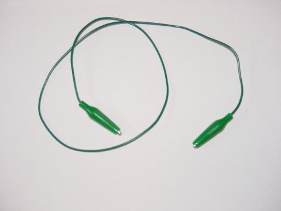
Jumper wires (home-made)
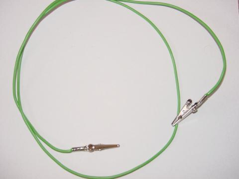
The home-made jumper wires with large, uninsulated (bare metal) alligator clips are okay to use so long as care is taken to avoid any unintentional contact between the bare clips and any other wires or components. For use in crowded breadboard circuits, jumper wires with insulated (rubber-covered) clips like the jumper shown from Radio Shack are much preferred.
======================================
Needle-nose pliers are designed to grasp small objects, and are especially useful for pushing wires into stubborn breadboard holes.
Needle-nose pliers
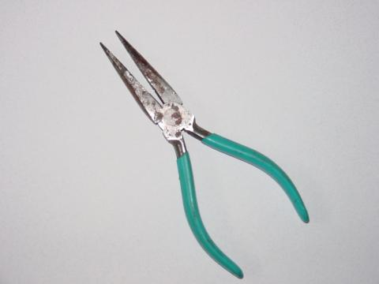
======================================
No tool set would be complete without screwdrivers, and I recommend a complementary pair (3/16 inch slotted and #2 Phillips) as the starting point for your collection. You may later find it useful to invest in a set of jeweler's screwdrivers for work with very small screws and screw-head adjustments.
Screwdrivers
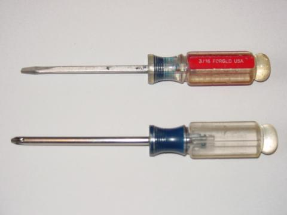
======================================
For projects involving printed-circuit board assembly or repair, a small soldering iron and a spool of "rosin-core" solder are essential tools. I recommend a 25 watt soldering iron, no larger for printed circuit board work, and the thinnest solder you can find. Do not use "acid-core" solder! Acid-core solder is intended for the soldering of copper tubes (plumbing), where a small amount of acid helps to clean the copper of surface impurities and provide a stronger bond. If used for electrical work, the residual acid will cause wires to corrode. Also, you should avoid solder containing the metal lead, opting instead for silver-alloy solder. If you do not already wear glasses, a pair of safety glasses is highly recommended while soldering, to prevent bits of molten solder from accidently landing in your eye should a wire release from the joint during the soldering process and fling bits of solder toward you.
Soldering iron and solder ("rosin core")
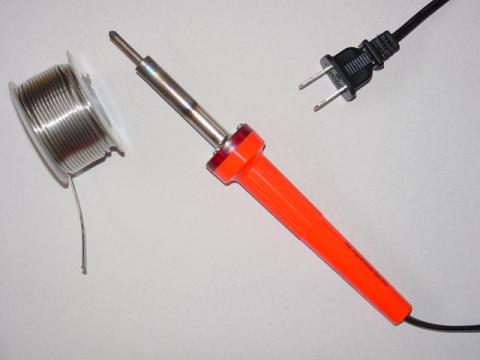
======================================
Projects requiring the joining of large wires by soldering will necessitate a more powerful heat source than a 25 watt soldering iron. A soldering gun is a practical option.
Soldering gun
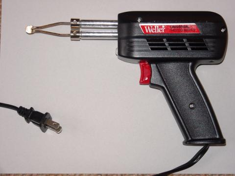
======================================
Knives, like screwdrivers, are essential tools for all kinds of work. For safety's sake, I recommend a "utility" knife with retracting blade. These knives are also advantageous to have for their ability to accept replacement blades.
Utility knife
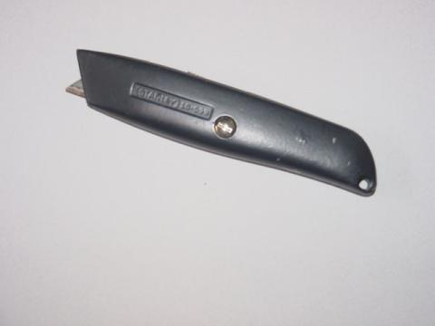
======================================
Pliers other than the needle-nose type are useful for the assembly and disassembly of electronic device chassis. Two types I recommend are slip-joint and adjustable-joint ("Channel-lock").
Slip-joint pliers
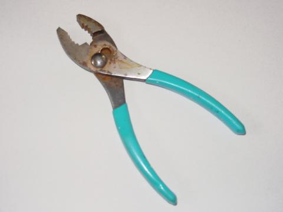
Adjustable-joint pliers
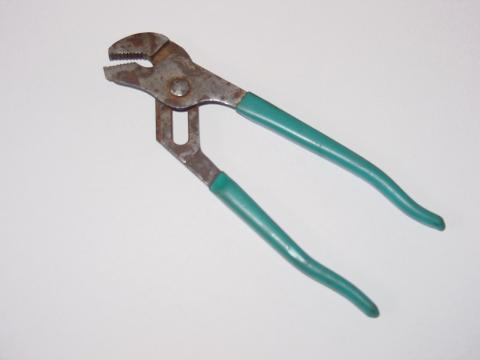
======================================
Drilling may be required for the assembly of large projects. Although power drills work well, I have found that a simple hand-crank drill does a remarkable job drilling through plastic, wood, and most metals. It is certainly safer and quieter than a power drill, and costs quite a bit less.
Hand drill
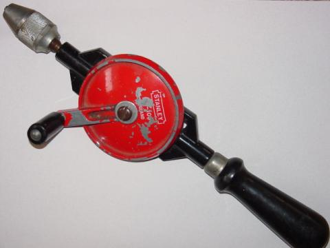
As the wear on my drill indicates, it is an often-used tool around my home!
======================================
Some experiments will require a source of audio-frequency voltage signals. Normally, this type of signal is generated in an electronics laboratory by a device called a signal generator or function generator. While building such a device is not impossible (nor difficult!), it often requires the use of an oscilloscope to fine-tune, and oscilloscopes are usually outside the budgetary range of the home experimenter. A relatively inexpensive alternative to a commercial signal generator is an electronic keyboard of the musical type. You need not be a musician to operate one for the purposes of generating an audio signal (just press any key on the board!), and they may be obtained quite readily at second-hand stores for substantially less than new price. The electronic signal generated by the keyboard is conducted to your circuit via a headphone cable plugged into the "headphones" jack. More details regarding the use of a "Musical Keyboard as a Signal Generator" may be found in the experiment of that name in chapter 4 (AC).
Wire used in solderless breadboards must be 22-gauge, solid copper. Spools of this wire are available from electronic supply stores and some hardware stores, in different insulation colors. Insulation color has no bearing on the wire's performance, but different colors are sometimes useful for "color-coding" wire functions in a complex circuit.
Spool of 22-gauge, solid copper wire
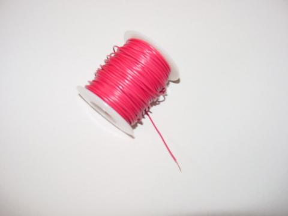
Note how the last 1/4 inch or so of the copper wire protruding from the spool has been "stripped" of its plastic insulation.
======================================
An alternative to solderless breadboard circuit construction is wire-wrap, where 30-gauge (very thin!) solid copper wire is tightly wrapped around the terminals of components inserted through the holes of a fiberglass board. No soldering is required, and the connections made are at least as durable as soldered connections, perhaps more. Wire-wrapping requires a spool of this very thin wire, and a special wrapping tool, the simplest kind resembling a small screwdriver.
Wire-wrap wire and wrapping tool
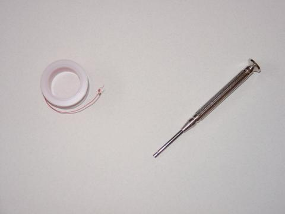
======================================
Large wire (14 gauge and bigger) may be needed for building circuits that carry significant levels of current. Though electrical wire of practically any gauge may be purchased on spools, I have found a very inexpensive source of stranded (flexible), copper wire, available at any hardware store: cheap extension cords. Typically comprised of three wires colored white, black, and green, extension cords are often sold at prices less than the retail cost of the constituent wire alone. This is especially true if the cord is purchased on sale! Also, an extension cord provides you with a pair of 120 volt connectors: male (plug) and female (receptacle) that may be used for projects powered by 120 volts.
Extension cord, in package
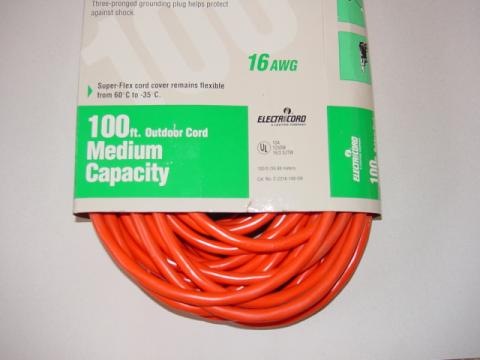
To extract the wires, carefully cut the outer layer of plastic insulation away using a utility knife. With practice, you may find you can peel away the outer insulation by making a short cut in it at one end of the cable, then grasping the wires with one hand and the insulation with the other and pulling them apart. This is, of course, much preferable to slicing the entire length of the insulation with a knife, both for safety's sake and for the sake of avoiding cuts in the individual wires' insulation.
======================================
During the course of building many circuits, you will accumulate a large number of small components. One technique for keeping these components organized is to keep them in a plastic "organizer" box like the type used for fishing tackle.
Component box
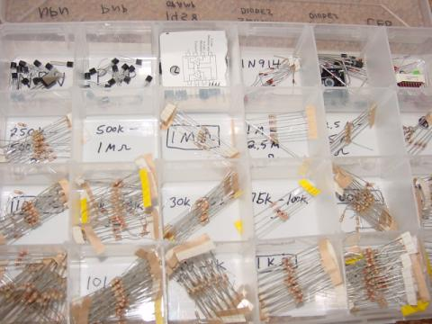
In this view of one of my component boxes, you can see plenty of 1/8 watt resistors, transistors, diodes, and even a few 8-pin integrated circuits ("chips"). Labels for each compartment were made with a permanent ink marker.
Contributors to this chapter are listed in chronological order of their contributions, from most recent to first. See Appendix 2 (Contributor List) for dates and contact information.
Michael Warner (April 9, 2002): Suggestions for a section describing home laboratory setup.
Lessons In Electric Circuits copyright (C) 2002-2023 Tony R. Kuphaldt, under the terms and conditions of the CC BY License.